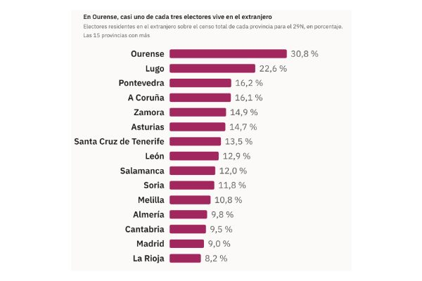

Actualidad · Camino al 29N · España
Después de las elecciones generales del 29N: cuándo se constituyen las Cortes y los plazos de la investidura
Las Cortes se constituyen el 23 de diciembre. Para la investidura no hay fecha, pero sí un plazo: dos meses desde la primera votación. Desde 2015, ningún presidente ha sido investido antes de 58 días.
Por Nacho G. del Álamo ·
Cada párrafo lleva una etiqueta: dato (cifra comprobable con las fuentes), patrón (relación que se repite, sin afirmar la causa), hipótesis (explicación posible, sin dos fuentes independientes) o contexto (hechos y declaraciones publicados por otros, enlazados). Cómo verificamos
DatoLas elecciones del 29N eligen a las Cortes, no al presidente del Gobierno. Al presidente lo elige después el Congreso, y para eso hay un calendario fijado por la Constitución. Las nuevas Cortes se constituyen el miércoles 23 de diciembre a las 10.00, según la guía de Interior. A partir de ahí no hay fecha para la investidura, pero sí un plazo: si dos meses después de la primera votación nadie la ha ganado, se repiten las elecciones.
El calendario
| Cuándo | Qué pasa |
|---|---|
| Domingo 29 de noviembre | Elecciones. Al cierre de los colegios, a las 20.00, empieza el recuento en las mesas. |
| Del 4 al 7 de diciembre | Escrutinio general en las juntas electorales provinciales, con el voto de los residentes en el extranjero. |
| Miércoles 23 de diciembre, 10.00 | Sesión constitutiva del Congreso y del Senado: cada cámara elige su Mesa y su presidente. |
| Después | El Rey consulta a los representantes de los grupos y propone un candidato a través del presidente del Congreso. |
| Primera votación | El candidato necesita mayoría absoluta: 176 votos a favor. |
| 48 horas después | Segunda votación: basta con más síes que noes. |
| Dos meses después de la primera votación | Si nadie ha sido investido, el Rey disuelve las Cortes y convoca nuevas elecciones. |
ContextoFuente: guía de Interior para el 29N y artículos 68 y 99 de la Constitución.
Las Cortes, el 23 de diciembre
DatoLa Constitución dice que «el Congreso electo deberá ser convocado dentro de los veinticinco días siguientes a la celebración de las elecciones» (artículo 68.6). El 23 de diciembre son 24 días después del 29N; el último posible sería el 24 de diciembre. Es lo habitual: desde 1982, las Cortes se han constituido siempre entre 19 y 25 días después de las elecciones. Ese día se elige al presidente del Congreso, que es quien después transmite al Congreso la propuesta del Rey y fija la fecha del debate.
La investidura
Dato«El Rey, previa consulta con los representantes designados por los Grupos políticos con representación parlamentaria, y a través del Presidente del Congreso, propondrá un candidato a la Presidencia del Gobierno» (artículo 99). El candidato expone su programa y pide la confianza de la cámara. En la primera votación necesita «la mayoría absoluta de sus miembros», 176 de 350 diputados. Si no la consigue, se vota otra vez «cuarenta y ocho horas después» y basta «la mayoría simple»: más votos a favor que en contra.
DatoSi el candidato pierde, se pueden proponer otros. El reloj empieza con la primera votación: «si transcurrido el plazo de dos meses, a partir de la primera votación de investidura, ningún candidato hubiere obtenido la confianza del Congreso, el Rey disolverá ambas Cámaras y convocará nuevas elecciones con el refrendo del Presidente del Congreso». Como no hay plazo para esa primera votación, el calendario completo depende de cuándo se celebre.
Cuánto ha tardado otras veces
DatoDe 1982 a 2011, la investidura llegó entre 30 y 62 días después de las elecciones; la más rápida fue la de Mariano Rajoy en 2011, a los 30 días, según los datos del Congreso. Desde 2015 ha tardado mucho más. Tras las elecciones de diciembre de 2015 y de abril de 2019, ningún candidato obtuvo la confianza y hubo que repetirlas. Mariano Rajoy fue investido en octubre de 2016, 125 días después de las elecciones de junio y 314 después de las de diciembre de 2015. Pedro Sánchez lo fue en 2020, a los 58 días, y en 2023, a los 116, después de que Alberto Núñez Feijóo perdiera las dos votaciones de septiembre.
Ver la tabla
| Elecciones | Cortes constituidas | Investidura | Presidente | Días hasta la investidura |
|---|---|---|---|---|
| 28 de octubre de 1982 | 18 de noviembre de 1982 | 1 de diciembre de 1982 | Felipe González | 34 |
| 22 de junio de 1986 | 15 de julio de 1986 | 23 de julio de 1986 | Felipe González | 31 |
| 29 de octubre de 1989 | 21 de noviembre de 1989 | 5 de diciembre de 1989 | Felipe González | 37 |
| 6 de junio de 1993 | 29 de junio de 1993 | 9 de julio de 1993 | Felipe González | 33 |
| 3 de marzo de 1996 | 27 de marzo de 1996 | 4 de mayo de 1996 | José María Aznar | 62 |
| 12 de marzo de 2000 | 5 de abril de 2000 | 26 de abril de 2000 | José María Aznar | 45 |
| 14 de marzo de 2004 | 2 de abril de 2004 | 16 de abril de 2004 | José Luis Rodríguez Zapatero | 33 |
| 9 de marzo de 2008 | 1 de abril de 2008 | 11 de abril de 2008 | José Luis Rodríguez Zapatero | 33 |
| 20 de noviembre de 2011 | 13 de diciembre de 2011 | 20 de diciembre de 2011 | Mariano Rajoy | 30 |
| 20 de diciembre de 2015 | 13 de enero de 2016 | No hubo | — | — |
| 26 de junio de 2016 | 19 de julio de 2016 | 29 de octubre de 2016 | Mariano Rajoy | 125 |
| 28 de abril de 2019 | 21 de mayo de 2019 | No hubo | — | — |
| 10 de noviembre de 2019 | 3 de diciembre de 2019 | 7 de enero de 2020 | Pedro Sánchez | 58 |
| 23 de julio de 2023 | 17 de agosto de 2023 | 16 de noviembre de 2023 | Pedro Sánchez | 116 |
Mientras tanto, un Gobierno en funciones
Dato«El Gobierno cesa tras la celebración de elecciones generales» y «continuará en funciones hasta la toma de posesión del nuevo Gobierno» (artículo 101). Mientras no haya investidura, el Gobierno sigue, pero en funciones. Si hubiera que repetir las elecciones, el decreto de disolución lo refrenda el presidente del Congreso y no el del Gobierno (artículo 167 de la LOREG).
ContextoLos diputados que salgan elegidos en cada provincia y los escaños de cada partido estarán en el mapa la noche del 29N. Cuántos votos hacen falta para un escaño en cada provincia, en el precio del escaño.
Preguntas frecuentes
¿Cuándo se constituyen las Cortes después del 29N?
El miércoles 23 de diciembre a las 10.00, según la guía de Interior. La Constitución da como máximo 25 días tras las elecciones.
¿Cuántos votos necesita un candidato para ser investido?
En la primera votación, mayoría absoluta: 176 de 350. En la segunda, 48 horas después, basta con más votos a favor que en contra (artículo 99).
¿Qué pasa si nadie consigue la investidura?
Si dos meses después de la primera votación ningún candidato ha obtenido la confianza, el Rey disuelve las Cortes y convoca nuevas elecciones.
¿Cuánto tardó la investidura en 2023?
116 días: Pedro Sánchez fue investido el 16 de noviembre de 2023, tras las elecciones del 23 de julio.
¿Quién gobierna hasta la investidura?
El Gobierno que había, en funciones, hasta que tome posesión el nuevo (artículo 101 de la Constitución).
Elecciones 29N 2026 · El precio del escaño · Cómo votar el 29N
Método y fuentes
- Qué se compara
- El calendario tras las elecciones generales del 29N según la Constitución y la guía de Interior, y los días que pasaron entre las elecciones, la constitución de las Cortes y la investidura del presidente en cada legislatura desde 1982.
- Límites
- La fecha de la investidura es la de la votación que la otorgó o, si el Congreso no la da, el último día de la sesión. No hay plazo legal para la primera votación, así que el calendario del 29N a partir del 23 de diciembre no se puede fijar. No incluye la investidura de 1979.
- Cómo se calcula
- Días naturales entre la fecha de las elecciones y la de la sesión constitutiva y la investidura, con las fechas de la página de sesiones de investidura del Congreso (datos/investiduras_1982_2023.csv). Script: despues_29n.py, en actualidad/src/resumenes. Cifras reproducibles con los scripts del expediente de la pieza. Metodología de Actualidad · Metodología del Atlas
- Fuentes
- BOE, Constitución Española (artículos 68, 99 y 101)
- BOE, Ley Orgánica 5/1985, del Régimen Electoral General (artículo 167)
- Congreso de los Diputados, sesiones de investidura (1979-2023)
- Ministerio del Interior en La Moncloa, 29N: guía básica sobre las elecciones generales y el proceso electoral (6-11-2026)
- Autoría
- Nacho G. del Álamo
- Revisión de datos y texto
- Nacho G. del Álamo, 23 de noviembre de 2026
- Publicado · actualizado
- 23 de noviembre de 2026 · 23 de noviembre de 2026
- Correcciones
- Ninguna.
Serie «Camino al 29N»: 177 piezas
- Elecciones generales: las encuestas dan al PSOE entre el 25,5 y el 33,3 %
- Elecciones generales: Vox baja al 17 % en la encuesta diaria de El País
- Encuestas elecciones generales 2026, hoy 18 de noviembre: el PSOE, a dos puntos o menos del PP
- Encuestas elecciones generales 2026, hoy 19 de noviembre: Sondaxe deja al PSOE a 0,7 puntos del PP
- Debate Sánchez Feijóo: hora, dónde verlo y quién gana el cara a cara
- Elecciones generales: el modelo de encuestas da escaño al Frente Amplio en 5 de sus 17 provincias
- Elecciones generales: en Gijón, Vox sacó en 2023 su mejor resultado en Somió, el barrio más rico: 17,0 %
- Encuestas elecciones generales 2026, hoy 20 de noviembre: el PP gana en las cinco, por entre 2,0 y 4,6 puntos
- Veda de encuestas: hasta cuándo se pueden publicar las del 29N
- Cómo votar en las elecciones generales del 29N: horario, qué llevar y cómo saber tu colegio
- A qué hora se sabrán los resultados de las elecciones generales del 29N
- Participación en las elecciones generales del 29N: las encuestas prevén un 73,1 %, 2,7 puntos más que en 2023
- Estás aquíDespués de las elecciones generales del 29N: cuándo se constituyen las Cortes y los plazos de la investidura
- Escrutinio de las elecciones generales del 29N: cómo seguirlo en directo y cuándo es definitivo
- Voto en blanco y voto nulo en las elecciones generales del 29N: qué cuenta y a quién afecta
- Encuestas elecciones generales 2026, hoy 23 de noviembre: PP y Vox suman mayoría absoluta en las siete
- Programa electoral de PP, PSOE, Vox y Frente Amplio: qué propone cada uno el 29N
- Getafe-Atlético: en la ciudad del Coliseum, el PSOE pasó de ganar en 112 de las 122 secciones a ganar en 74, y el PP se quedó a 2.182 votos
- El derbi sevillano se juega en barrios del PP: en Nervión, el del Sánchez-Pizjuán, ganó en 37 de 41 secciones; en la ciudad, el PSOE fue primero en 286 de 521
- A una semana del 29N, la mediana de las encuestas da al PP 3,4 puntos de ventaja, 1,2 menos que hace siete días; el lunes 23 es el último día para publicarlas
- Ver las 177 piezas de la serie
Más datos: elecciones generales del 29N de 2026: fecha y escaños por provincia · resultados de las elecciones generales 2026 (29N) y los de 2023 · dónde y cómo votar el 29N: colegio electoral, voto por correo y plazos.
Sigue leyendo
 Encuestas de hoyEncuestas elecciones generales 2026, hoy 23 de noviembre: PP y Vox suman mayoría absoluta en las siete
Encuestas de hoyEncuestas elecciones generales 2026, hoy 23 de noviembre: PP y Vox suman mayoría absoluta en las siete Camino al 29NVoto en blanco y voto nulo en las elecciones generales del 29N: qué cuenta y a quién afecta
Camino al 29NVoto en blanco y voto nulo en las elecciones generales del 29N: qué cuenta y a quién afecta
Camino al 29NEscrutinio de las elecciones generales del 29N: cómo seguirlo en directo y cuándo es definitivo ParticipaciónParticipación en las elecciones generales del 29N: las encuestas prevén un 73,1 %, 2,7 puntos más que en 2023
ParticipaciónParticipación en las elecciones generales del 29N: las encuestas prevén un 73,1 %, 2,7 puntos más que en 2023 Crónica de la semanaA una semana del 29N, la mediana de las encuestas da al PP 3,4 puntos de ventaja, 1,2 menos que hace siete días; el lunes 23 es el último día para publicarlas
Crónica de la semanaA una semana del 29N, la mediana de las encuestas da al PP 3,4 puntos de ventaja, 1,2 menos que hace siete días; el lunes 23 es el último día para publicarlas Getafe-AtléticoGetafe-Atlético: en la ciudad del Coliseum, el PSOE pasó de ganar en 112 de las 122 secciones a ganar en 74, y el PP se quedó a 2.182 votos
Getafe-AtléticoGetafe-Atlético: en la ciudad del Coliseum, el PSOE pasó de ganar en 112 de las 122 secciones a ganar en 74, y el PP se quedó a 2.182 votos